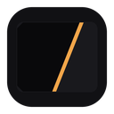
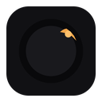

Choose the event, not the decoration. Every direction uses the same dark theater, First Light amber, and abstract myth posture. The difference is what moment the identity remembers.
Review the wordmark first, then the icon at 16 / 32 / 128 px, then the same accent in use. Reply with A, B, C—or a redirect.
A. The Crack of Light
Darkness interrupted once. The opening is narrow, deliberate, and already enough.

Dock evidence · actual pixels
1632

128
Accent in use
Let the engine lead.
The frame stays quiet. Footage gets the color.
A taut, open custom wordmark is interrupted once at the initial U. The icon reduces that event to a diagonal seam, making it the most immediate expression of “light in darkness” and the least dependent on myth knowledge.
Risk: Its severity may feel more architectural than musical. That is also what keeps it timeless.
B. The Mirror Catch
Light noticed indirectly: a dark field, a prepared surface, one off-center gleam.

Dock evidence · actual pixels
1632

128
Accent in use
Let the engine lead.
The frame stays quiet. Footage gets the color.
Rounder lettering catches a single amber point inside its final counter. Nested tonal discs turn that reflected instant into a Dock object without depicting a mirror, eye, or ritual artifact.
Risk: The optical disc has the most familiar visualizer adjacency and must stay clearly abstract.
C. The Rhythm
A measured phrase repeats through the dark until one beat carries light.

Dock evidence · actual pixels
1632128
Accent in use
Let the engine lead.
The frame stays quiet. Footage gets the color.
Repeated vertical measures give the custom wordmark an internal tempo; one lit stroke becomes a composed five-beat icon. It speaks most directly to shader contributors and music-software fluency.
Risk: Bars are a crowded audio symbol. The irregular composed phrase must remain distinct from an equalizer.